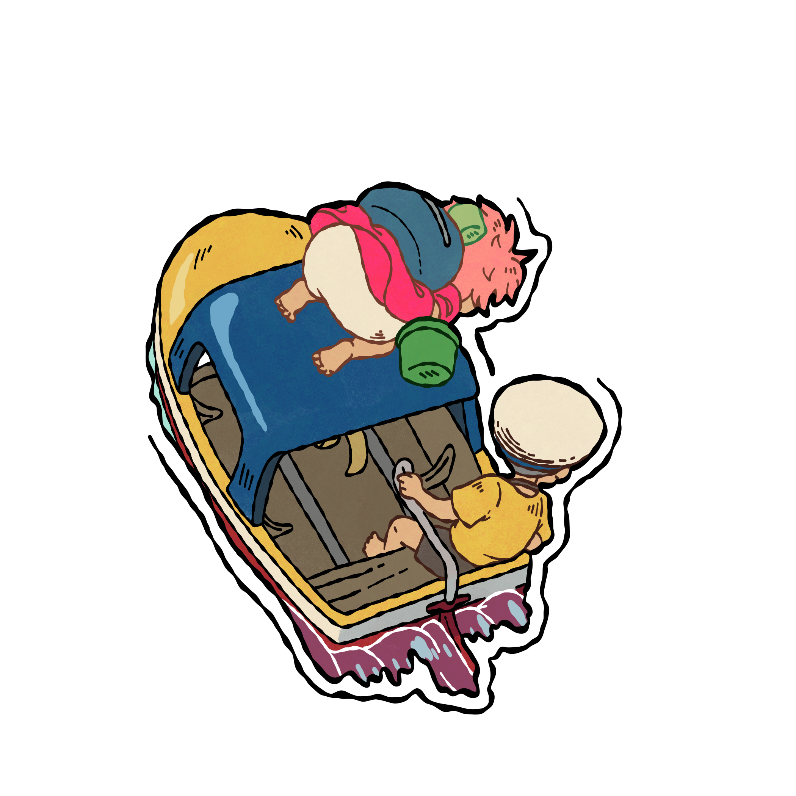

The next morning, the ocean rose over the town, and Ponyo and Sosuke had to travel to find his mother who went missing. On their journey, Ponyo used her magical powers to help people along the way, including turning Sosuke’s toy boat big enough for them to use.

As they journeyed, ponyo slowly began getting sleepy and losing her powers. Finally they went into the sea, Ponyo and Sosuke reuniting with his mom along with Ponyo’s mom. Sosuke promised to ponyo’s mom that he would love her for who she was, and Ponyo’s mom said they could be together as human but she would no longer have magical powers. Ponyo would just be a normal human.
In the end, they both returned to the surface and the balance of nature was restored. Sosuke kissed the bubble that Ponyo was in and she turned back into a human. And they both lived together happily ever after!